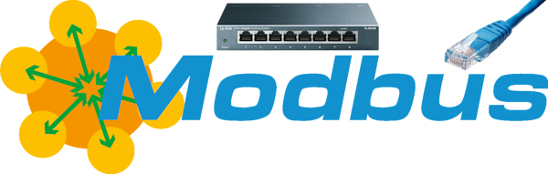

Modbus TCP#
A connection type for ModbusDevice

Modbus TCP is a connection type for ModbusDevice, not a separate driver class: set "transport": "tcp" in the config’s connection block, or pass a ModbusTCPTransport explicitly.
Creating a ModbusDevice over TCP#
from instro.modbus import ModbusDevice
# connection block declared inline, e.g. { "transport": "tcp", "host": "192.168.1.100", "port": 502 }
device = ModbusDevice(config="my_device.json")
device.open()
Or with an explicit, shareable transport:
from instro.lib.transports import ModbusTCPTransport
from instro.modbus import ModbusDevice
transport = ModbusTCPTransport(host="192.168.1.100", port=502)
device = ModbusDevice(config="my_device.json", connection=transport, unit_id=1)
Parameters and methods specific to ModbusDevice can be found in the SDK.